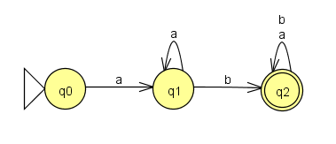
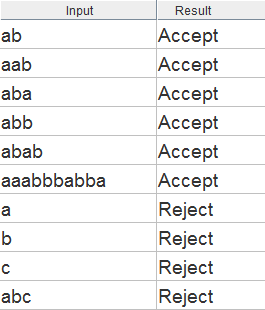

You may recall that one of the learning goals for this course is to understand how programming languages are implemented. We have already covered the differences between compiling, interpreting, and hybrid approaches to language implementation. This topic is the first of several that will drill down into the details of implementing programming languages.
The typical first step for compilers and interpreters is lexical analysis. The lexics of a programming language refers to the way that characters are combined to make words and other meaningful sequences. In lexical analysis the input source code is converted from a sequence of characters into a sequence of “lexemes”. A lexeme is a word, symbol, etc.– a meaningful chunk to pull from the input text. Lexemes are often the reserved words of the language (like if and while), operators (like + - * / =), and identifiers (names of variables, functions, etc.) The software routine that performs lexical analysis is often called a lexer or scanner.
Any PL has a finite list of reserved words, operators, and similar symbols; these are easy to identify by direct string matching. On the other hand, there could be an infinite (or at least very large) number of valid identifiers for variables, functions, etc. It is not feasible to list these in advance. But, since most PLs require identifiers to conform to certain rules, potential identifiers in the source code could be tested for validity. In a similar way, it is not feasible to give a list of all valid integer values, all valid string values, and so on. What we need is a way of defining the patterns that describe valid values.
A finite automaton is a formal mathematical model. (“Automaton” is just a fancy word for “machine”; the plural is “automata”.) This diagram, produced with the JFLAP software tool, defines a finite automaton (FA) .

This state transition diagram shows the FA as a directed graph where the nodes represent states and the edges (arrows) represent state transitions. When applied to formal languages, the state transitions are labeled with data values for matching portions of an input string to be tested. The FA shown above has three states: q0, q1, and q2. The triangle marks q0 as the initial state, meaning that is where things start. Every FA must have exactly one initial state. The double circle marks q2 as a final state. Every FA has one or more final states. If we arrive in a final state with no more data to process, then we have processed the input successfully. This means that the input was accepted as valid; it matches the pattern defined by the FA.
The FA above is a precise formal description of a text pattern that could be informally described in English like this: valid strings start with “a”, followed by any number of “a”, followed by “b”, followed by any number of “a” or “b”. Here are the results when the JFLAP software is used to test various input strings against this FA.

To test each input, start at the FA’s initial state q0, then follow transitions that match the input’s first remaining character (and cross off that character). The input is accepted as valid if you are in the final state q2 with no input characters remaining. If you have remaining input characters with no matching transition, then the input is rejected.
Ok. We have shown that we can use FAs to define the text patterns for valid identifiers in a PL, or for valid integer values in a program, etc. While this will work, state transition diagrams are not the most convenient notation for use in actual programs. Let’s explore an alternative.
One of the fundamental lessons of the “How Hardware Works” class was the close relationship between machines and languages. Every machine defines a language. In this context, language means a set of strings; the language defined by a FA is the set of strings that are accepted by the machine.
A closely related point: machines can be replaced by languages, and vice-versa. We usually take this to mean that we can build an application-specific hardware device, or alternatively we can write software for a general-purpose programmable device. But we can make this move with respect to more abstract machines and languages, too.
We are now going to replace the FA (machine) above with an equivalent language. This simply means that we will model the same text pattern described by the FA in a different way: using text. This text is written as a regular expression.
A regular expression is a text string that uses a special syntax to define a pattern for text matching. If you have ever used “wildcards” like *.* or *.docx to match groups of filenames on your computer, then you have used something similar to regular expressions. The regular expression (also called a regexp or regex) can be used to test input strings: an input string either matches the regexp (by conforming to the pattern it describes), or does not match. A regular expression defines a language. The language is made up of the set of all strings that match the regexp.
Computational theorists have proven that every finite automaton can be converted to an equivalent regular expression, and vice-versa. There are algorithms for carrying out these conversions, and the JFLAP software implements some of them. For example, the JFLAP tool converts the FA shown above to the following regular expression:
aa*b(a+b)*This is a textual representation of the same text pattern modeled by the FA. In this regex, the characters “a” and “b” represent themselves. The asterisk is the Kleene star, which indicates zero or more of the item it follows. The parentheses are for grouping, and the plus symbol is the set union operator, which can be read as “OR”. So the regex describes a pattern of “a”, followed by zero or more “a”, followed by “b”, followed by zero or more of (“a” or “b”). Not the same English translation, but exactly the same text pattern as before.
Remember our goal here is to understand lexical analysis, the first step in implementing a PL. Lexers or scanners often make use of regular expressions to define lexical rules for a PL, but regular expressions also show up in other practical contexts. Many programmer’s text editors allow sophisticated search and replace based on regular expressions. One of the classic Unix tools is sed (stream editor), a programmable utility for transforming text using regular expressions. The programming language awk is frequently paired with sed. Many PLs allow the use of regular expressions for matching text patterns.
The regular expression syntax used in JFLAP is common in the area of formal languages and computational theory. However, most “practical” software such as lexers and text editors use a different regular expression syntax. Although the exact details can vary from one tool to another, most would write our earlier regex something like this:
a+b[ab]*In this syntax, the plus symbol has a different meaning. It is the Kleene cross, which means “one or more” of the preceding item. The asterisk is the same as before. The square brackets contain alternative choices. So the direct English translation is: one or more “a”, followed by “b”, followed by zero or more from [“a” or “b”]. Again, the same text pattern.
(By the way, the Kleene operators are named for Stephen Kleene, a pioneer in mathematical logic and theoretical computer science.)
This practical syntax for regular expressions has other syntax features that allow a compact representation of complex patterns. Let’s take an example from JavaScript. JavaScript identifiers must start with a letter, dollar sign, or underscore; after that, numeric digits are also allowed. Here is a regular expression that defines the language of valid JavaScript identifiers.
[a-zA-Z_$][a-zA-Z0-9_$]*The expression is using the dash to define ranges of characters. The first bracketed expression says that matching strings must start with a lowercase letter a-z, an uppercase letter A-Z, an underscore, or a dollar sign. Then come zero or more repetitions of lowercase letters or uppercase letters or digits 0-9 or the underscore or the dollar sign. You should be able to see that this regular expression defines exactly the pattern described in English.
Computational theorists call the set of languages that can be defined by FAs (or equivalently, by regular expressions) regular languages. Not all languages are regular; we will see later that our notations are not powerful enough to define all languages.
Did you notice that I referred to regular expressions as a language? But aren’t they used to define languages? Yes, regular expressions are a formal language used to describe formal languages. Such languages are called meta-languages, and we’re not done with them. (This is the language analog of the concept of virtual machines. Maybe they should be called meta-machines.)
Compilers and interpreters are meta-software: software that operates on other software.
Computer scientists just love to “go meta”.
xkcd: Regular Expressions